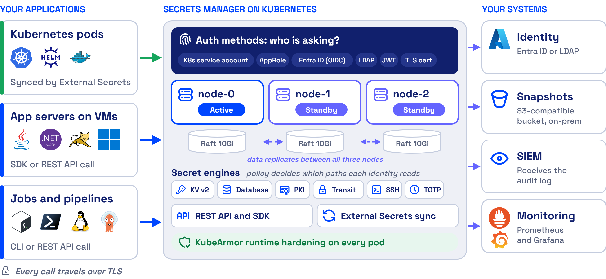
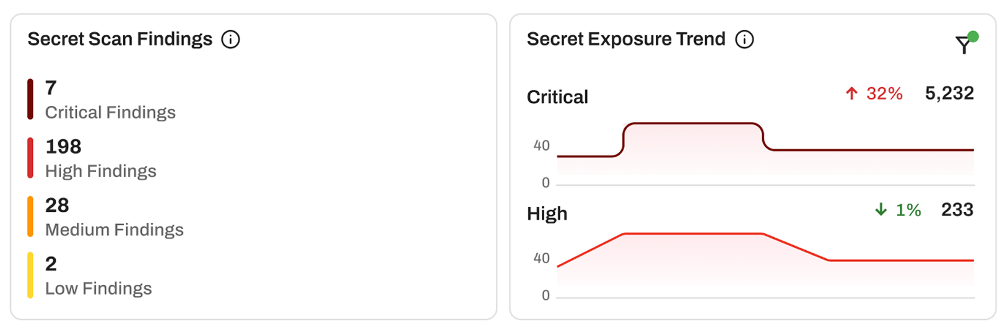
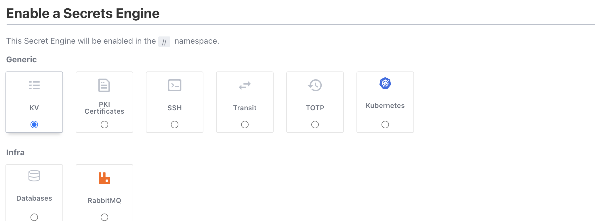
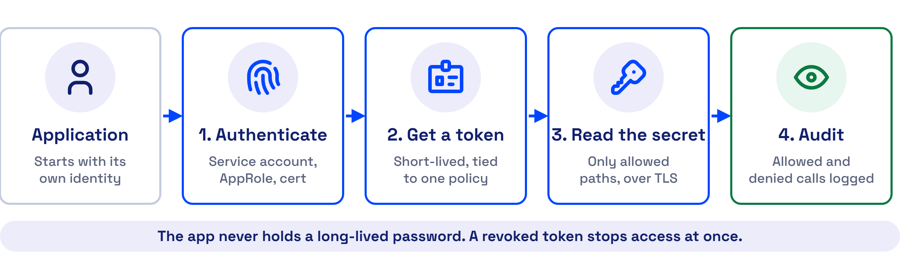
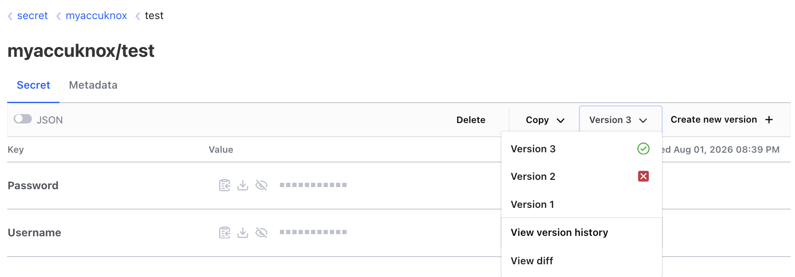
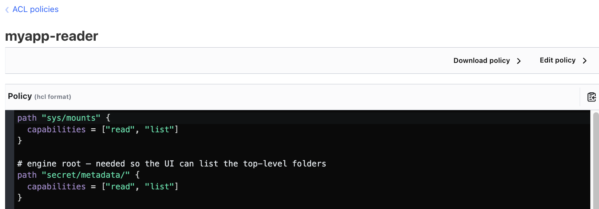
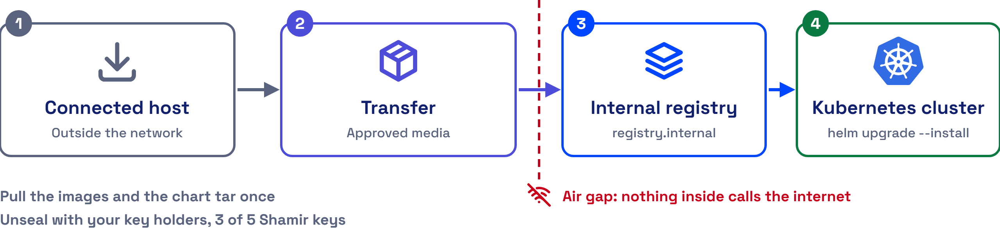

Secrets management best practices cheat sheet
Keep every
secret out of
your code
Six practices to find leaked keys, store them in one place and serve them at runtime with AccuKnox Secrets Manager.
Six practices to find leaked keys, store them in one place and serve them at runtime with AccuKnox Secrets Manager.
Developers commit keys, tokens and passwords faster than teams revoke them. An attacker who finds one valid key logs in with no exploit at all.
New hardcoded secrets added to public GitHub commits in 2025, up 34% year over year.
Of the secrets confirmed valid in 2022 were still valid when GitGuardian retested them in January 2026.
The median time to remediate leaked secrets found in a GitHub repository.
Detection alone does not close the gap. A leaked key stays dangerous until someone revokes it, and most teams avoid rotation because a password change can break production.
Four habits put live credentials in places no scanner or reviewer checks.
Private repositories feel safe. Internal repos are roughly 6 times more likely than public ones to hold hardcoded secrets, because the exposure feels far away.
Secrets travel outside code. About 28% of incidents start entirely outside repositories, in Slack, Jira and Confluence. A code scanner never reads them.
Pipelines hold live keys. In one supply chain attack dataset, 59% of the compromised machines were CI/CD runners, not personal laptops.
Rotation feels risky. A key with no owner and no rotation path stays in place, because nobody knows which service breaks when it changes.
Sources. Rows 01 to 03, GitGuardian, State of Secrets Sprawl 2026.
Practice 01 runs in the AccuKnox platform as Secret Scanning. Practices 02 to 06 run in AccuKnox Secrets Manager, which installs on its own on any Kubernetes cluster at version 1.30 or later.

Secrets Manager architecture. help.accuknox.com/secrets-manager/architecture
AccuKnox Secret Scanning reads every repository with its full commit history, and fails the build when it finds a key.

Secret Scan Findings dashboard. help.accuknox.com/use-cases/secret-scan-cicd-aws
Secret Scanning runs in GitHub Actions, GitLab, Jenkins, Bitbucket, CircleCI and more. Each finding shows the secret type, file path, commit SHA and committer. Add secret scanning to CI/CD
Secrets Manager holds passwords, API keys, tokens, certificates and one time codes behind policy, and encrypts them before they reach disk.

Enable a Secrets Engine screen. help.accuknox.com/secrets-manager/kv-secrets
Secrets Manager keeps Vault compatible APIs, so most Vault applications move to the new endpoint with minimal changes. Store your first secret
The application proves who it is, gets a short lived token and reads the secret straight into memory.

The four steps of a secret request. help.accuknox.com/secrets-manager/connect-applications
The SDK keeps the secret in application memory only, on Kubernetes and VMs, with samples for Python, Java, .NET and Node.js. Choose a connection method
A new version in Secrets Manager reaches Kubernetes within the refresh interval you set, with no manual edit.

Version history of a KV secret. help.accuknox.com/secrets-manager/kv-secrets
Leases and renewal policies rotate dynamic credentials automatically. The WordPress and MySQL walkthrough shows a password change end to end. Follow the walkthrough
An ACL policy names the exact paths an identity may read, and Secrets Manager logs every allowed and denied call.

An ACL policy scoped to one folder. help.accuknox.com/secrets-manager/sharing-secrets
Pods, VMs and people sign in through Kubernetes auth, AppRole, TLS certificates, OIDC with Microsoft Entra ID, LDAP, Okta or JWT. Scope access per user
Three nodes survive the loss of one, snapshots run every 15 minutes, and the install needs no internet access.

Air gapped install flow. help.accuknox.com/secrets-manager/air-gapped
AccuKnox CWPP, built on KubeArmor, hardens every Secrets Manager pod and limits what its processes can read and run. Set up high availability
Read each row. Where the condition is true for you, take the first step this week.
| If this is true | AccuKnox capability | First step |
|---|---|---|
| Keys sit in repositories or in old commits | Secret Scanning | Add the scan to every pull request and fail the build on a finding |
| Credentials live in env files, chat or spreadsheets | Secrets Manager KV engine | Move each secret to one KV version 2 path per component |
| Apps read secrets from plaintext config | SDK or External Secrets Operator | Connect one app with the method that fits it |
| Nobody knows when a password last changed | Versions and the Database engine | Rotate one database password, then restart the app |
| One token reads every secret | ACL policies and auth methods | Replace secret/data/* with one policy per app |
| The store runs as one pod with no backup | HA, snapshots and KubeArmor | Enable three replicas and the snapshot agent |
Book a demo and bring your gap check. We show the install, a scoped policy and a live app connection on Kubernetes.
Book a demo Read the Secrets Manager docsThe AccuKnox CNCF sandbox project that hardens every Secrets Manager pod.
Existing Vault applications move with minimal changes.